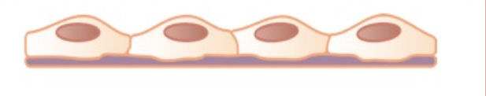
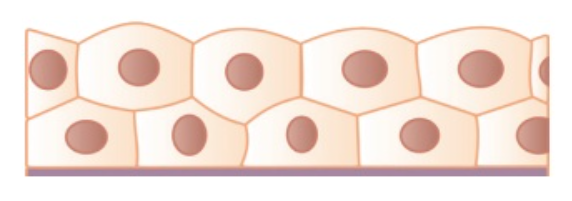

Епителна тъкан
Какво е тъкан?
- съвкупност от клетки със сходен строеж, произход, функции и междуклетъчно вещество.
I. Епителна тъкан
Клетките на епителната тъкан са плътно разположени с малко междуклетъчно вещество.
Тя се дели на покривен епител и жлезист епител.
А. Покривен епител
А/ Еднослоен - един слой клетки
- плосък
- облага повърхности, където основната функция е обменът на вещества и газове.

- призматичен
- защитна функция, абсорбация, секреция и транспорт
- кубичен
- участва във филтрацията на урината изпити абсорбацията на вещества
Б/ Многослоен - плоски клети, подредени в много слоеве
- вроговяващ - eпидермис
-невроговяващ - изгражда лигавици
Б.Жлезист епител
а/ жлези с външна секреция (екзокринни жлези) - единични или група от клетки, които са свързани с каналче.
1.1 функции - отделя секрети на повърхността или в кухините на вътрешните органи
1.2 примери - потни, мастни, млечни, слъзни, храносмилателни

б/ Жлези с външна секреция (ендокринни жлези) - група от клетки, които изграждат жлеза
2.1 функции - хормоните се отделят в кръвта
2.2 примери - хипофизна, щитовидна, околощитовидна и т.н
в/ Жлези със смесена (двойна) секреция - едновременно осъществява ендокринна и екзокринна функция
2.1 функции - храносмилане в дванадесетопръстника
2.2 примери - Задстомашна, полови жлези